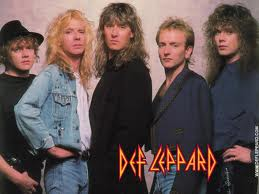
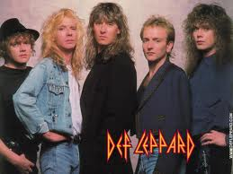
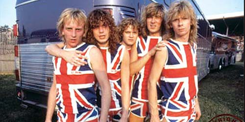
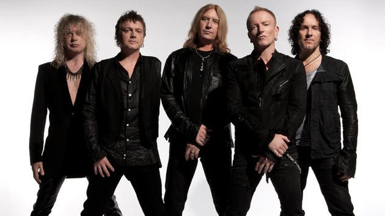

This is an exciting website that is designed to introduce you to all types of music from all kinds of eras of music.

Def Leppard is a rock band that has been around since 1977. They are from Sheffield in England and have 5 band members.To meet the go to the biography page.
They are a band that made it big in the 80's, so your parents or even your grandparents will know who they are.
Def leppard have sold over 100 million records and share this achievement with others such as
Eminem
Taylor Swift
Bon Jovi
Britney Spears
Kiss
They are ranked 31 on the 100 Greatest Artists Of Hard-rock, and were ranked 70 on the 100 Greatest Artists Of All Time. They are also one of five rock bands ever the achieve a Diamond Certification with selling over 10 million copies of their first two albums. The other bands to achieve them are Van Halen,Led Zeppelin,The Beatles,Pink Floyd.
There most well know songs are "pour some sugar on me", "bringin' on the heartache", "love bites" there are many more, you may have heard them.
Def Leppard have recently had there music on the movie Rock of Ages starring Tom Cruise, They are also going on tour with the band Kiss. They have been in the news regarding the band One Direction where they have been accused of stealing from Def Leppard's song "Pour Some Sugar On Me" with there song "Midnight Memories". Def Leppard made it into the Guinness Book Of Records on 23rd October 1995 for playing three gigs in three different continents in 1 day.(Tangiers, Morocco; London, England; and Vancouver, Canada)
Sample of their music can be found playing in the background. The song is called "Action"
Def leppard in the 1980's
Def leppard in 2013